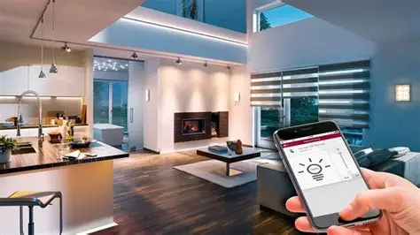

Angeles Rosales
Técnica electrónica. Responsable de la organización del grupo y las programaciones de los sistemas de seguridad.
Esmeralda Marcone
Técnica. Se encarga de la contabilidad de la empresa y realiza la instalación de los sensores.

Luna Tornquist
Técnica electrónica encargada de las instalaciones de sistemas de iluminarias y de algunas instalaciones eléctricas.
Naima Pérez
Marketing. Diseña estrategias para conectar con las personas y expandir RedSir.
Gabriel Saires
Técnico. Se encarga del mantenimiento, prioriza la comodidad y la utilidad del cliente en cada instalación.